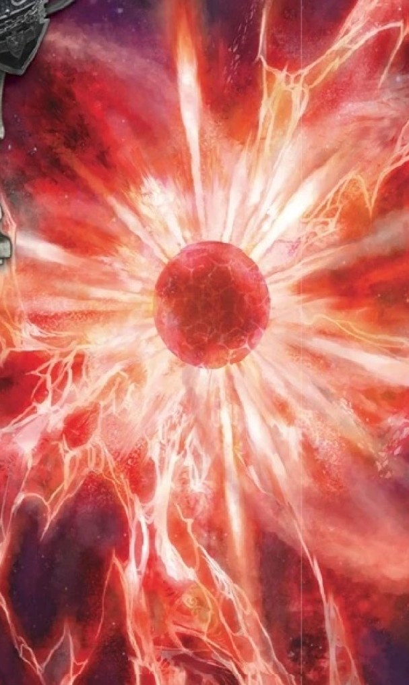

Hadex Anomaly
| Hadex Anomaly | |
|---|---|
 Astrographic plate of the Hadex Anomaly taken by the Achilus Crusade, c. 780.M41 | |
| Type | Warp rift with temporal effects; unclassified, comparable to a Class III warp disturbance |
| Location | Cellebos region, Jericho Reach, Eastern Fringe |
| Formed | 656.M40 |
| Named | By the Rogue Trader Emanuel Hadex, early M41 (estimated) |
| Status | Growing; eastern end of the Great Rift since 999.M41 |
| Imperial restriction | Closed to all but authorised vessels by edict of Lord Militant Solomon Tetrarchus, after 779.M41 |
| Associated campaigns | Achilus Crusade (from 777.M41), the Acheros Salient |
The Hadex Anomaly is a Warp rift in the Jericho Reach, on the Eastern Fringe of the galaxy. It appeared in 656.M40 and, unlike other known rifts, distorts time as well as space: worlds within its glow suffer days of changing length, ships leave the Warp before they enter it, and messages arrive before they are sent. Since the opening of the Great Rift in 999.M41 it has formed the rift's eastern end, the other being the Eye of Terror.[1][2]
The Anomaly takes its name from Lord Captain Emanuel Hadex, a Rogue Trader who reached it in the early 41st millennium and was driven mad by it. Its blood-red light has stained the surrounding stars, called the Charon Stars, and it has stood in the way of the Achilus Crusade since that crusade entered the Reach in 777.M41.[1]
Description
[edit]The Anomaly appears as a vast red nebula with a dark heart, which observers have compared to a rose or to a wound. It is smaller than the great rifts such as the Eye of Terror or the Maelstrom. The Adeptus Mechanicus has not been able to classify it, and treats it as similar to a Class III warp disturbance, a region where the turbulence of the Immaterium spills over into realspace.[1]
It does not keep still. Its edge advances and retreats in a slow rhythm, swallowing and releasing whole star systems over decades. Measurements taken by the Deathwatch at Ormasim over several centuries show that, on balance, it grows a little every year. Stars caught within it turn a dull red and cast a light that is said to sicken those who live under it.[1][3]
Temporal effects
[edit]The Anomaly's most notable property is its effect on time. When it formed, its light was seen at once across the Ultima Segmentum, by observatories as distant as Nocturne, which no light in realspace could do. Within its influence the length of day and night changes without pattern. Voidships making short warp jumps arrive months after they left, or days before. Astropathic messages are mixed with fragments of messages never sent. The light of the Anomaly overwhelms that of the Astronomican, so that only the most gifted Navigators can steer near it.[1]
The Magi Physic of the Mechanicus have proposed that the Anomaly "spews time" into the galaxy from some other dimension. Others suggest that it is alive. Around its outer edge lies a ring of derelict voidships, held in a stasis from which none has been freed.[1]

History
[edit]Origin
[edit]Records of the Deathwatch state that the Anomaly came into being during an ill-omened planetary alignment in 656.M40, as the result of a blood rite performed by the worshippers of Chaos on one of the worlds that it then swallowed. The Jericho Sector had fallen into anarchy since the Age of Apostasy in M36, and no agent of the Imperium was there to stop it. Later accounts link the ritual to the lords of Verronus, a decadent hive world believed destroyed when the Anomaly appeared.[3][a]
Emanuel Hadex
[edit]The Anomaly was named by Emanuel Hadex, a Rogue Trader of a dynasty that had traded in the region of Charadon. He fled his home when the Ork Arch-Arsonist invaded and, finding a gap in the storms around the Jericho Sector, took his fleet of five ships into the Reach in the early 41st millennium.[b] On sighting the Anomaly he named it the Hadex Nebula. His journal records that he believed it spoke to him in his dreams, and he drove the fleet towards its heart. When one ship tried to turn back he ordered it fired upon, and his officers mutinied.[1]
In 779.M41 the Navy battleship Messier Ascendant of the Achilus Crusade found Hadex's flagship, the Aletris, drifting at the edge of the ring of derelicts. Its crew had died fighting one another. Hadex himself was found barricaded on the bridge, frozen on his command throne. Each of the other four ships of his fleet met its own fate; one, the cruiser Hippaestrum, is believed to have returned as a raider in 809.M41.[1]
Achilus Crusade
[edit]The Achilus Crusade entered the Reach through the Jericho-Maw Warp Gate in 777.M41 under Lord Militant Tiber Achilus. Its eastern front, the Acheros Salient, was soon halted by the Anomaly as much as by the forces of Chaos. After the discovery of the Aletris, Lord Militant Solomon Tetrarchus, Achilus's successor, declared the Anomaly closed to all but the most highly authorised ships, including those of the Inquisition and the Deathwatch. Rogue Traders who have tried to salvage the derelicts have not returned.[1]
The Great Rift
[edit]The opening of the Great Rift in 999.M41, during the Thirteenth Black Crusade, tore a scar across the galaxy from the Eye of Terror to the Hadex Anomaly. Since then the Anomaly has been regarded as the Rift's eastern terminus, and its effects are thought to have spread. Most of what the Imperium knows of it was gathered before the Rift opened. The worlds of the Jericho Reach, cut off by the Rift and by the Noctis Aeterna, have sent few reports since.[2]
Timeline
[edit]| Date | Event |
|---|---|
| M36 | The Jericho Sector falls out of Imperial control in the Age of Apostasy |
| 656.M40 | The Anomaly appears; its light is seen at once across the Ultima Segmentum |
| Early M41 (estimated) | Emanuel Hadex names it the Hadex Nebula; his fleet mutinies |
| 777.M41 | The Achilus Crusade enters the Jericho Reach |
| 779.M41 | The Aletris found; the Anomaly closed to unauthorised shipping |
| 809.M41 | A cruiser believed to be the Hippaestrum raids Imperial convoys near Eleusis |
| 999.M41 | The Great Rift opens with its eastern end at the Anomaly |